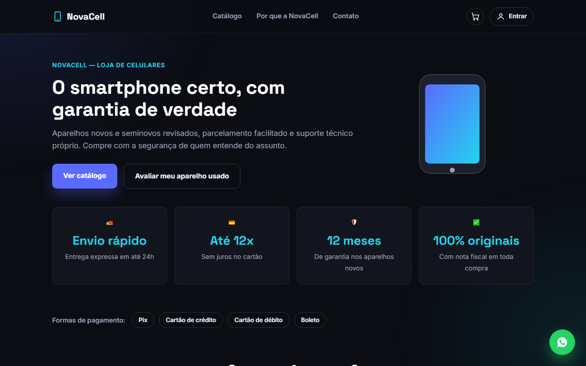

01
NovaCell
Loja de celulares
Uma loja de eletrônicos de oito páginas, com catálogo de 160 produtos. É o projeto mais completo em quantidade de tela: o cliente busca, filtra, monta o carrinho, calcula o frete e fecha o pedido.
- Busca e filtros por categoria, preço e destaque
- Carrinho que continua cheio depois de fechar o navegador
- Calculadora de frete e simulador de troca do aparelho usado
- Login, área de perfil e finalização de compra